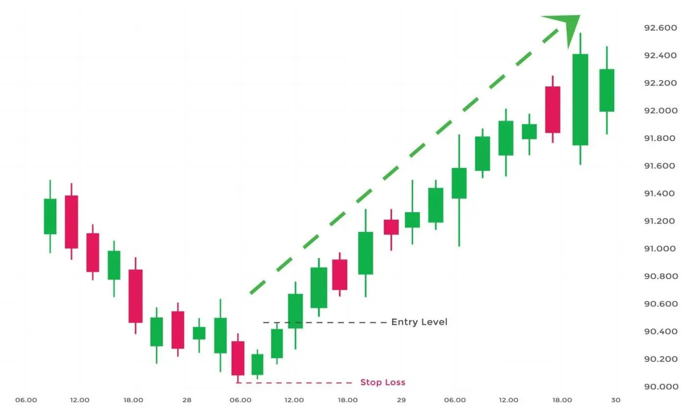

மூன்று உள் மேல் முனைவு ஒரு வர்த்தக முனைவு, இது சந்தையின் கீழ்வரும்
சுழற்சியை முடித்து, மேல் சுழற்சியின் தொடக்கத்தை குறிக்கும். இந்த முனைவு
மூன்று 'கந்தில்ஸ்டிக்ஸ' மூலம் உருவாக்கப்பட்டது. முதன்முதல் 'கந்தில்ஸ்டிக்' கீழே வந்துவிடுகிறது, இரண்டாவது 'கந்தில்ஸ்டிக்' மேல் உள்ளது, அது முதன்முதல்
'கந்தில்ஸ்டிக்' உடலை முழுமையாக அதை ஆவற்றாக மாற்றுவதில்லை, மூன்றாவது 'கந்தில்ஸ்டிக்'
மேல் உள்ளது அது முதன்முதல் மற்றும் இரண்டாவது 'கந்தில்ஸ்டிக்'
உடலை முழுமையாக மாற்றுவதில்லை.
